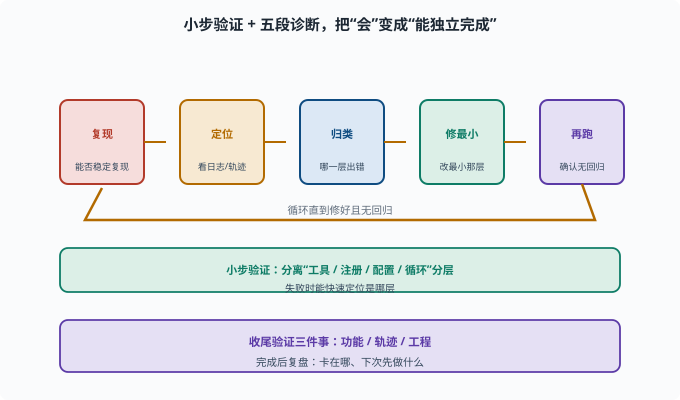

端到端任务：把前面所有能力串成一个真实任务
目标：完成一个"需要读代码、造工具、配 profile、跑任务、复盘轨迹"的综合任务。读完这一页，你能独立规划并从零跑完一个 agent 任务，附带结果验证。
把"会"变成"能独立完成"
前面几页分别练了环境、启动、会话、循环、工具、skill、MCP、profile、bundle。这一页把它们串成一个完整任务，考验你是否真的"会"。
一个很好的综合任务，是"在仓库里加一个小工具/打印小能力，并让 agent 用起来"。
任务设计（示例）：加一个自定义工具
目标：给 harness 加一个 "repo_stats" 工具（统计当前仓库文件数/行数），并跑一个任务让 agent 调用它。
子任务拆解：
1. 读懂现有工具怎么写（读 packages/... 那类工具）
2. 写工具逻辑（统计文件/行数）
3. 注册到 ctx.tools
4. 配一个 profile/让它能被调用
5. 建一个任务让 agent 用上它
6. 观察轨迹，验证工具真被调用、结果正确
参考实现骨架
按 10-05 的三件套（契约 + 逻辑 + 注册），这个工具大致长这样：
ctx.effect(() => ctx.tools.register(defineTool({
name: "repo_stats",
description: "统计指定目录下的文件数与总行数。需要了解仓库规模时使用。",
parameters: {
dir: { type: "string", required: true, description: "要统计的目录路径" },
},
output: {
schema: {
type: "object",
properties: {
files: { type: "number" },
lines: { type: "number" },
},
},
render: (_args, value) => [
{ type: "text", text: `${value.files} files, ${value.lines} lines` },
],
},
async execute(args, exec) {
let files = 0
let lines = 0
// 用 fs 能力或 exec.sandbox 提供的文件访问遍历统计
return { files, lines }
},
})))
写完先 pnpm run typecheck 过类型，再补一个单测（喂临时目录、断言计数），最后才接到 profile 里跑真任务。
第 6 步怎么做：看轨迹
验证"工具真被调用"不靠猜：打开 10-03 教的会话日志，rg '"type":"tool/call"' <session-log> 找到 repo_stats 的调用事件，再对照紧随的 tool/result——参数、返回值、耗时全在日志里。这一步同时复训了"model-visible ⟺ logged"：模型看到的工具结果，一定能从日志重建。
执行节奏：别一把梭
小步验证：
先写工具；typecheck + 单测
再注册；跑通一个最小任务
再验证轨迹与结果
一次只前进一小步，出了错能快速定位是哪一层（工具逻辑 / 注册 / 配置 / 循环）。
过程中反复用到的"诊断循环"
复现：能不能稳定复现问题
定位：看会话日志/轨迹，哪一步开始不对
归类：是工具错、配置错、还是循环/权限错
修最小：改最小那层
再跑：确认修复且无回归

上图把"诊断循环"画成一条首尾相接的环形流水线：复现 → 定位（看日志/轨迹）→ 归类（哪一层出错）→ 修最小 → 再跑（确认无回归），然后回环重复直到真正修好。环绕它的那句话是"小步验证：分离工具 / 注册 / 配置 / 循环分层"——这正是"一把梭"做不到的：一次只前进一步，失败时才能快速判断是哪一层坏了。底部的紫色收束句提醒你收尾时验证三件事（功能、轨迹、工程），并留出复盘。
验证三件事
1. 功能：任务真的完成了吗（文件/行数对不对）
2. 轨迹：工具确被调用、参数对、结果真实
3. 工程：typecheck/单测通过、无权限越界
复盘：完成之后问自己
我在哪一步卡了最久？为什么？
哪一步是"概念清楚"但"落地卡壳"？
下次做类似任务，我会先做什么？
复盘是把"完成一件事"升级成"学会一类事"的关键。
思考题
- 一个端到端任务通常由哪些子任务组成？
- 为什么执行要"小步验证"而不是"一把梭"？
- 任务完成后要验证哪三类结果？
- 诊断循环的四步是什么？
- 复盘的价值是什么？
参考答案
- 读懂相关代码、实现功能（如写工具）、注册/配置、跑通一个最小任务、验证轨迹与结果、复盘；往往还包含必要的测试。
- 因为"一把梭"失败时难以定位是哪层出了问题；小步验证能在每层快速反馈，让"工具逻辑/注册/配置/循环"分开排查。
- 功能（任务真完成了、结果正确）、轨迹（工具被调用、参数对、结果真实）、工程（typecheck/单测通过、无权限越界）。
- 复现 → 定位（看日志/轨迹哪一步不对）→ 归类（哪一层）→ 修最小 → 再跑确认无回归。
- 把"完成一件事"升级为"学会一类事"：看清卡点、总结方法，下次做相似任务更快更稳。
下一步
- 想让结果可评估、可回归 → 08-08 Agent 评估。
- 想在交付前守好底线 → 11 安全与治理。
- 想回看整个学习路线 → 00 学习路线。